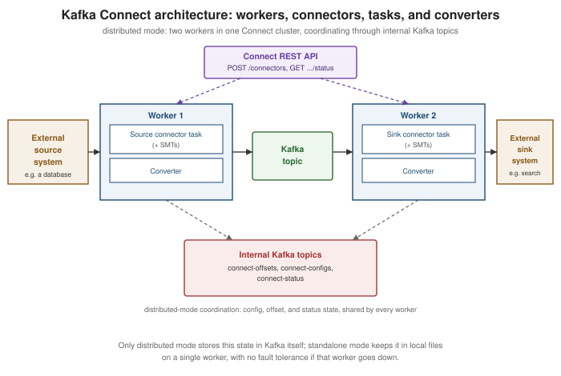

Kafka Connect
|
This content was generated with the assistance of AI and should be verified against the official documentation before being relied on in production. |
Kafka Producers and Kafka Consumers are what an application reaches for when it owns the code on both ends of a topic. Kafka Connect is a different tool for a different job: an integration framework, running as its own cluster of processes, that moves data between Kafka topics and external systems — databases, search indexes, object stores, other message brokers — using pre-built, configuration-driven connectors rather than hand-written producer/consumer code. This page covers Connect’s architecture, when it’s the right tool versus writing a client directly, and the transactional-outbox pattern as a concrete worked example of that choice.
Source and sink connectors
A source connector reads from an external system and produces records onto Kafka topics (e.g. tailing a
database’s binlog and publishing row changes); a sink connector consumes from Kafka topics and writes into
an external system (e.g. indexing records into a search engine). Both are configuration, not code, from an
operator’s point of view: a connector is installed once as a plugin (a JAR on the worker’s plugin path) and then
instantiated any number of times by posting a JSON configuration to the REST API described below — no
KafkaProducer/KafkaConsumer code is written or deployed for the specific integration itself.
Workers: standalone vs. distributed mode
A worker is the JVM process that actually runs connectors and their tasks. Connect ships two ways to run workers:
| Mode | Behavior |
|---|---|
Standalone ( |
A single worker process; connector and task state, offsets, and configuration all live in local files on that one machine. Simple to run, but has no fault tolerance — if the process or its host goes down, everything it was running stops until it’s restarted, and there’s no coordination with any other worker. |
Distributed ( |
Multiple worker processes sharing one |
Distributed mode is the practical default for anything beyond local development or a single throwaway integration — standalone mode’s lack of fault tolerance and its purely local, file-based state make it a poor fit for anything meant to run unattended in production.
Tasks and converters
A connector configuration doesn’t run directly — it is split into one or more tasks, each an independent
unit of work the worker(s) schedule and execute; tasks.max caps how many a connector may be split into, and
Connect itself decides how to divide the connector’s work across that many tasks (e.g. one task per table for a
JDBC source connector, or a partitioned split of a topic’s partitions for a sink connector). Every task reads or
writes data through a converter, configured independently for keys and values
(key.converter/value.converter), which is what actually translates between a connector’s internal
Struct/schema representation and the bytes that go on the wire — JsonConverter (with or without an embedded
schema), StringConverter, or a schema-registry-backed Avro/Protobuf/JSON Schema converter such as
io.confluent.connect.avro.AvroConverter, matching the serialization choices covered on
Kafka Serialization and Schemas. A converter is a
cluster-wide (or connector-level, if overridden) setting, independent of which specific connector plugin is
running — the same AvroConverter configuration works whether the connector on the other end is a JDBC source
or an Elasticsearch sink.
Single message transforms
A single message transform (SMT) is a small, chainable, stateless per-record modification applied by the
worker between a connector and its converter — renaming or masking a field, dropping a tombstone, flattening a
nested value, or routing a record to a different topic based on its contents. SMTs are configured directly on
the connector, as an ordered list (transforms=addPrefix,maskSsn, each with its own
transforms.<name>.type and settings), and run entirely inside the worker process with no external service
call — they are for shaping individual records in flight, not general-purpose stream processing (that’s
Kafka Streams' job). The outbox event router used in the worked
example below is itself shipped as an SMT.
The REST API
Every Connect worker exposes a REST API (default port 8083) for managing connectors — creating, updating, pausing, resuming, restarting and deleting them, and inspecting task status — and in distributed mode this API is how configuration actually gets into the cluster, since there’s no separate admin CLI:
package com.example.connect;
import java.net.URI;
import java.net.http.HttpClient;
import java.net.http.HttpRequest;
import java.net.http.HttpResponse;
public class OutboxConnectorRegistrar {
private static final String CONNECT_REST_URL = "http://localhost:8083/connectors";
public static void main(String[] args) throws Exception {
String connectorConfig = """
{
"name": "orders-outbox-connector",
"config": {
"connector.class": "io.debezium.connector.postgresql.PostgresConnector",
"tasks.max": "1",
"database.hostname": "postgres",
"database.dbname": "orders",
"table.include.list": "public.outbox",
"transforms": "outbox",
"transforms.outbox.type": "io.debezium.transforms.outbox.EventRouter"
}
}
""";
HttpClient client = HttpClient.newHttpClient();
HttpRequest request = HttpRequest.newBuilder()
.uri(URI.create(CONNECT_REST_URL))
.header("Content-Type", "application/json")
.POST(HttpRequest.BodyPublishers.ofString(connectorConfig))
.build();
HttpResponse<String> response = client.send(request, HttpResponse.BodyHandlers.ofString());
System.out.println("Connector registration status: " + response.statusCode());
}
}GET /connectors/<name>/status reports the connector’s and each task’s state (RUNNING, PAUSED, FAILED,
…) and the worker currently running them; PUT /connectors/<name>/config updates a running connector’s
configuration in place without deleting and recreating it. See
Apache Kafka Documentation — Kafka Connect User Guide
for the full endpoint reference.
Offsets and error handling
A source connector’s notion of "how far it has read" from the external system (a database’s binlog position, a
file’s byte offset, a table’s last-seen primary key) is its source offset, stored by Connect itself
(connect-offsets in distributed mode, or a local file in standalone mode) so a restarted or migrated task
resumes from where it left off rather than replaying everything or skipping ahead. A sink connector’s offset is
simply its consumer group’s committed Kafka offsets, using the same mechanism covered on
Kafka Consumers.
errors.tolerance controls what a task does when converting or transforming a record fails: none (the
default) fails the task outright on the first bad record, while all skips the bad record and continues. Paired
with errors.tolerance=all, a sink connector’s dead-letter queue
(errors.deadletterqueue.topic.name, plus errors.deadletterqueue.context.headers.enable=true to attach
failure metadata as record headers) routes records that fail conversion or transformation to a separate Kafka
topic instead of silently dropping them, so they can be inspected and, if needed, reprocessed — the same
dead-letter-queue idea covered for Kafka Streams on
Kafka Streams, applied here to a sink task instead of a stream
processor. Source connectors have no equivalent dead-letter topic, since there is no Kafka record yet to reroute
at the point a source-side read or conversion fails — errors.tolerance on a source task only governs whether
such a failure is skipped or fails the task.
The transactional outbox pattern via CDC: when to use Connect instead of a producer/consumer
A service that both writes to its own database and needs to publish an event about that write faces a classic
consistency problem: if it writes to the database and then calls a Kafka producer as two separate steps, a crash
between them either loses the event or, with the write rolled back, publishes an event for something that never
actually happened. The transactional outbox pattern solves this by writing the event, as an ordinary row, to
an outbox table in the same database transaction as the business change — so the write and the event
record are atomic by construction — and then relying on something else to publish that row onward to Kafka.
This is exactly where change data capture (CDC) via Kafka Connect is the right tool, and writing a producer
directly is not: a CDC source connector (e.g. Debezium’s PostgreSQL or MySQL connector) tails the database’s own
write-ahead/binary log for changes to the outbox table and turns each inserted row into a Kafka record,
without the application ever calling a Kafka client itself. Debezium’s
outbox event router SMT (io.debezium.transforms.outbox.EventRouter, configured on the connector as in the
REST API example above) then reshapes that raw table-change event — deriving the destination topic from an
aggregatetype column, the record key from an aggregateid column, and the record value from a payload
column — so downstream consumers see a clean domain event on a topic named after its aggregate, rather than a
raw "row inserted into the outbox table" change event.
Whether to reach for Connect+CDC here instead of a hand-written producer call comes down to what the service can
tolerate: a direct producer call inside the same request is simpler to reason about locally but reintroduces the
dual-write problem above unless it participates in the same transaction as the database write (which a plain
KafkaProducer call cannot, short of the two-phase patterns
Kafka Reliability and Exactly-Once Semantics discusses in a different context); the outbox-via-CDC approach
adds an operational dependency (running Connect, and Debezium’s connector, as infrastructure) but gets
atomicity between the business write and the eventual publish for free, at the cost of at-least-once delivery
and some replication lag between the database commit and the Kafka record actually appearing.
Using Debezium source connectors and the Debezium JDBC sink connector to keep a legacy database and a new one in sync during a migration is covered in Database Migration.
